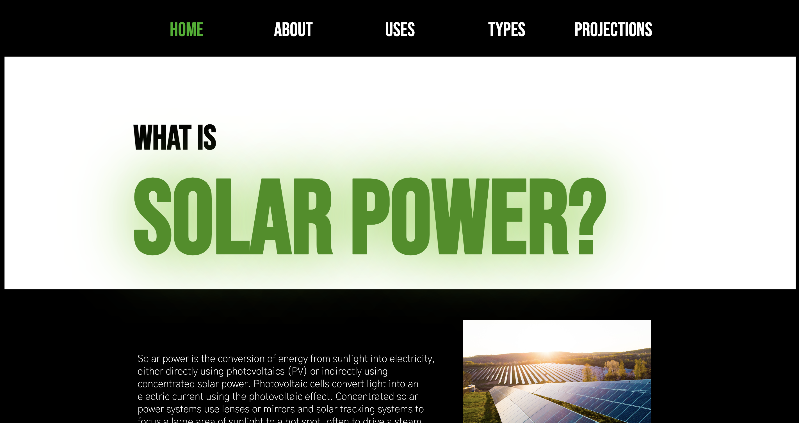

Projects
 Button Styling
Button Styling
This assignment was a deep dive into building, styling, and animating buttons. It was my first exploration of the sort, and I learned a ton!
Recipe Page
For this project, I designed a recipe page for fresh pasta, aiming to make the site sleek and highly readable.
 Jarritos Microsite
Jarritos Microsite
Here, I executed the vision of my creative director in order to implement a jarritos microsite. With my creative director, we aimed to make the page POP with color and contain highly interactive components.

Solar Power Microsite
For this assignment, I served as a creative director and helped guide my peer to execute my creative vision. Together, we built a sleek and modern guide to Solar Power.